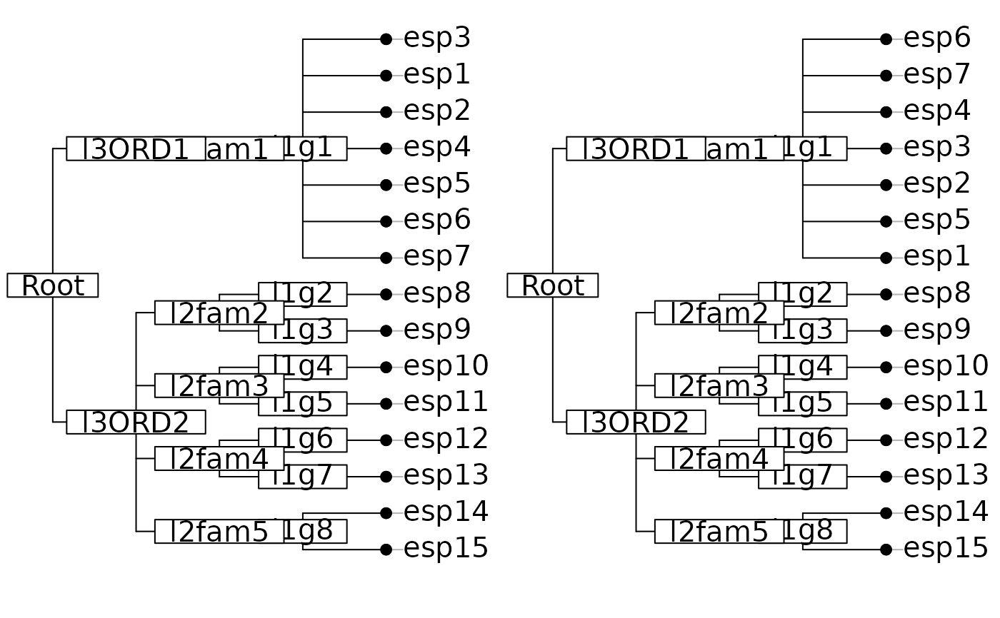

Taxonomy
as.taxo.RdThe function as.taxo creates an object of class taxo that is a sub-class of data.frame.
Each column of the data frame must be a factor corresponding to a level j of the taxonomy (genus, family, ...).
The levels of factor j define some classes that must be completly included in classes of factor j+1.
A factor with exactly one level is not allowed. A factor with exactly one individual in each level is not allowed.
The function dist.taxo compute taxonomic distances.
Author
Daniel Chessel
Sébastien Ollier sebastien.ollier@u-psud.fr
See also
taxo2phylog to transform an object of class taxo into an object of class phylog
Examples
data(taxo.eg)
tax <- as.taxo(taxo.eg[[1]])
tax.phy <- taxo2phylog(as.taxo(taxo.eg[[1]]),add.tools=TRUE)
par(mfrow = c(1,2))
plot(tax.phy, clabel.l = 1.25, clabel.n = 1.25, f = 0.75)
plot(taxo2phylog(as.taxo(taxo.eg[[1]][sample(15),])),
clabel.l = 1.25, clabel.n = 1.25, f = 0.75)

par(mfrow = c(1,1))
all(dist.taxo(tax)==tax.phy$Wdist)
#> [1] TRUE